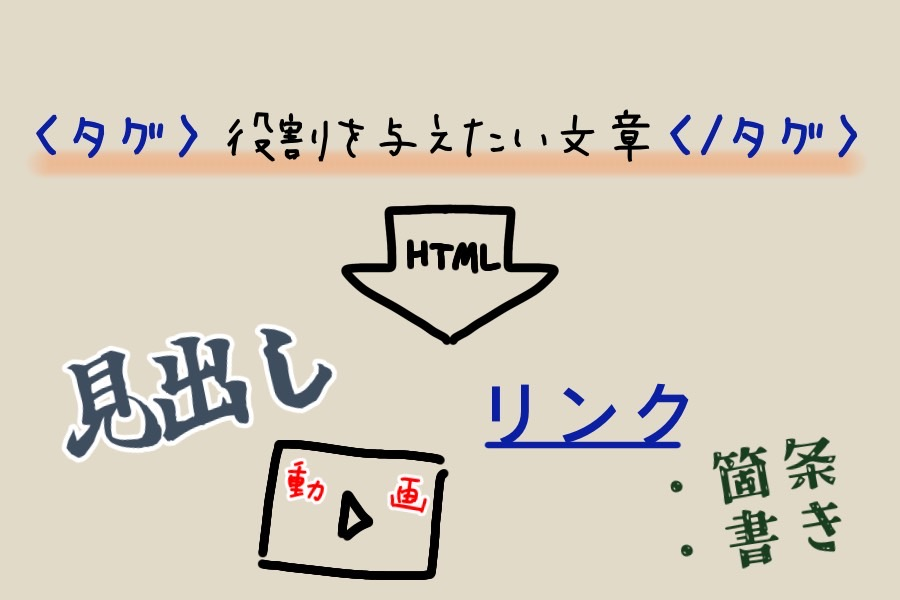

第１回 - GitおよびHTMLについて
１.Gitとは？
Gitとは、プログラムなどを管理するためのシステムです。
単にデータを保存するだけでなく、データの編集履歴なども管理することができます。
同じ目的のシステムはいくつか存在しますが、その中でもGitは使用する上で優れた点が多いのです。
その１：便利なブランチ
ブランチは、分岐していく編集履歴をそれぞれ記録したものです。
ブランチを活用することにより、プロジェクト本体に影響を与えることなく試行錯誤ができます。
また、データをブランチごとに記録することで、不具合の対応が容易になったり、適用する編集を選択できるといった利点もあります。

その２：安心な分散型
記録された編集履歴などは、リポジトリと呼ばれる場所に保存されます。
そして、このリポジトリが共有用（リモートリポジトリ）と個人用（ローカルリポジトリ）に分かれているのが分散型です。
分散型では、データはアップロードされる際に両方のリポジトリに保存されることになります。
こうすることで、データが消滅・破損してしまった場合でも容易に復元が可能になるのです。

他にも、動作が軽い点や誰でも無料で使用できる点など、さまざまなメリットがあります。
上記の特徴一つ一つはGitだけのものという訳ではありませんが、Gitはこれらを兼ね備えています。
つまり、Gitは便利で安全な非常に優れたシステムなのです。
□ 参考にさせていてだいたサイト ▶ Git（英語サイト）
□ 参考にさせていただいた動画 ▼
２.HTMLとは？
HTMLとは、ウェブページを作成するのに用いられるマークアップ言語です。
文章にタグと呼ばれるコマンドを追加することで、見出しの設定やリンクの表示など、さまざまな役割を付与できます。
役割を与えたい文章の前後をタグで挟むことによって変化します。

例えば、HTMLで
<b>あいうえお</b>と入力すると...
あいうえお と太文字にすることができます。（他にもたくさんのタグがあります。）
HTMLはウェブページを作成・充実させるために必要不可欠な存在なのです。